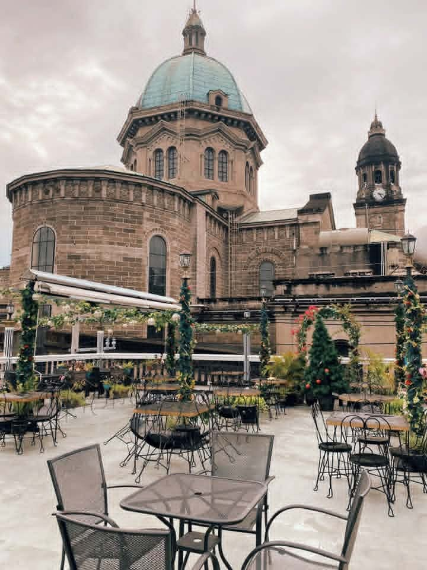

Gala Food Park
Pasay City | Japan-Inspired Food Park
◆
A neon-drenched sanctuary for late-night food runs. It gives off major Tokyo night-market vibes with a massive lineup of Japanese street eats, gyudon bowls, skewers, and desserts.

A sanctuary for restless souls and dark infusions under the Manila moon.
Pasay City | Japan-Inspired Food Park
A neon-drenched sanctuary for late-night food runs. It gives off major Tokyo night-market vibes with a massive lineup of Japanese street eats, gyudon bowls, skewers, and desserts.
Sampaloc, Manila | Industrial-Style Student Cafe
Tucked right in the heart of the U-Belt, this spot delivers a dark, raw-concrete aesthetic with serious caffeine heavyweights. It's the ultimate dark horse hideout for fueling intense study sessions or retreating from the chaotic Manila heat.

Intramuros, Manila | Rooftop Heritage Cafe
Nestled right behind the historic Manila Cathedral, this rooftop gem serves up unmatched view-side dining. The ambient warm lighting, wrought-iron fixtures, and up-close backdrop of Spanish-colonial architecture make it one of the most dramatically romantic places in the walled city for night coffee or a late-afternoon meal.
